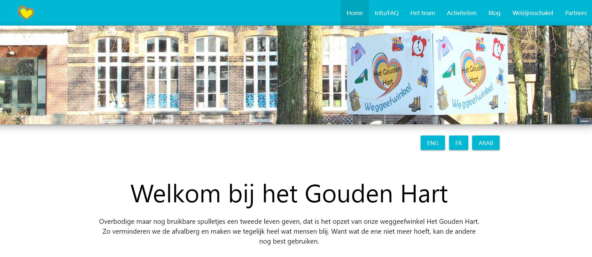

Project Webdesign
Mijn eerste project binnen de IT Factory was een webdesign opdracht! Deze heb ik samen met drie andere studenten gemaakt in het eerste semester van het eerste jaar. Voor de weggeefwinkel "Het Gouden Hart" in Lommel hebben we in groepsverband een website gemaakt.
Iedereen van onze groep heeft dan een deel van de website onder handen genomen. Hier was ook een competitie aan verbonden. De bedoeling was om een responsieve website te maken aan de hand van een framework genaamd Materialize. Voor de hele opdracht was er een tijdsduur voorzien van 5 dagen.
De moeilijkheid zat hier vooral in onze onwetendheid! Ik heb hier geleerd om de juiste bronnen op internet te gaan raadplegen om zo nieuwe kennis in een project te gaan verwerken. Ook heb ik hier voor de eerste keer kennis gemaakt met een versiebeheersysteem namelijk Git. Uiteindelijk heeft het eindresultaat mij ook een tweede plaats opgeleverd in de competitie! Op onderstaande foto kan u de homepagina bekijken waar ik mee aan geholpen heb!

Klik hier om naar de github repo te gaan waar u het gehele project kunt bekijken met het versiebeheersysteem!
{kind=link}